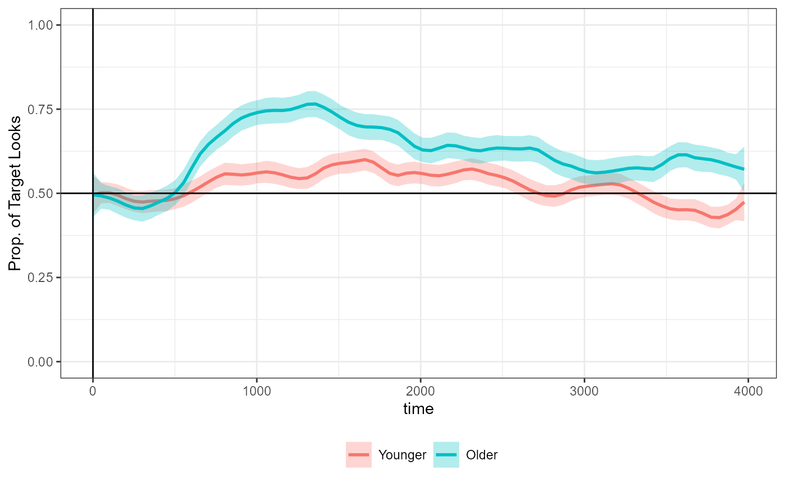
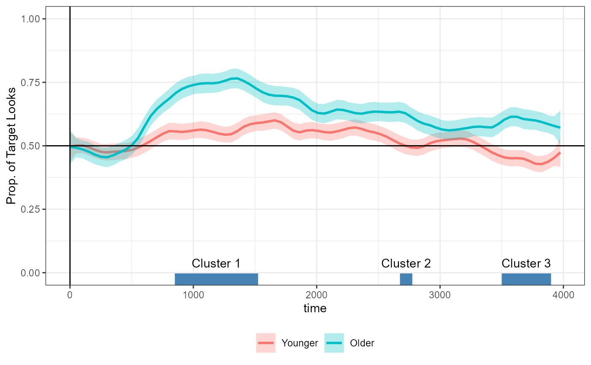
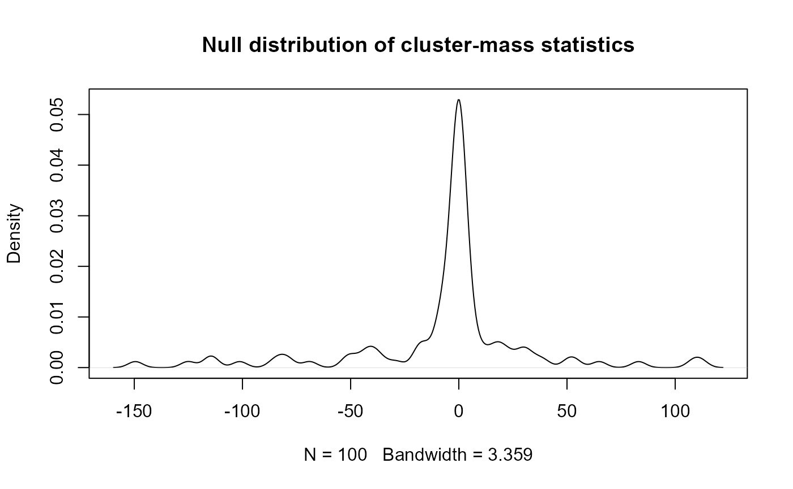
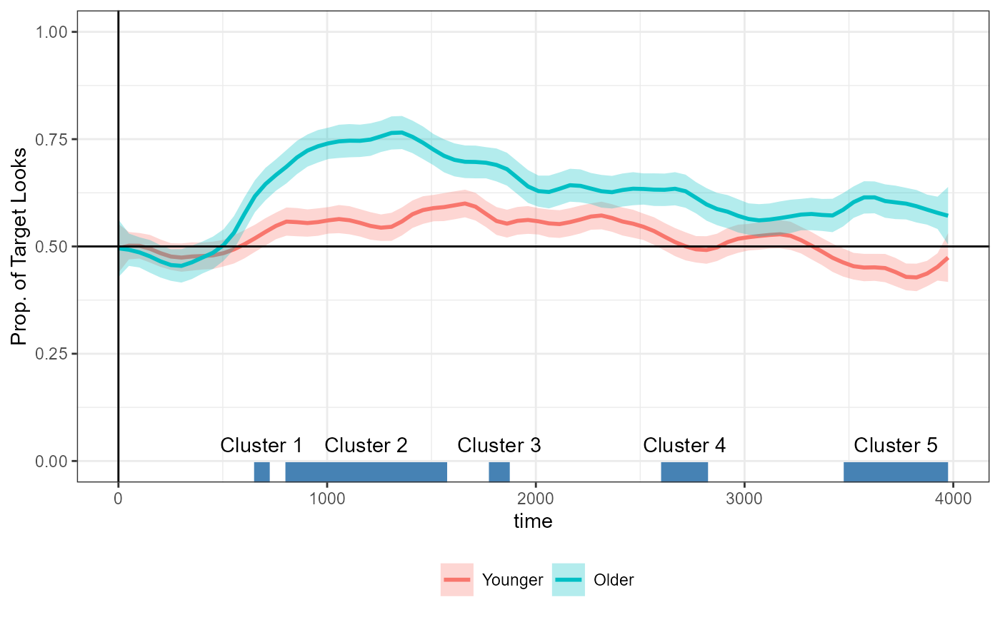
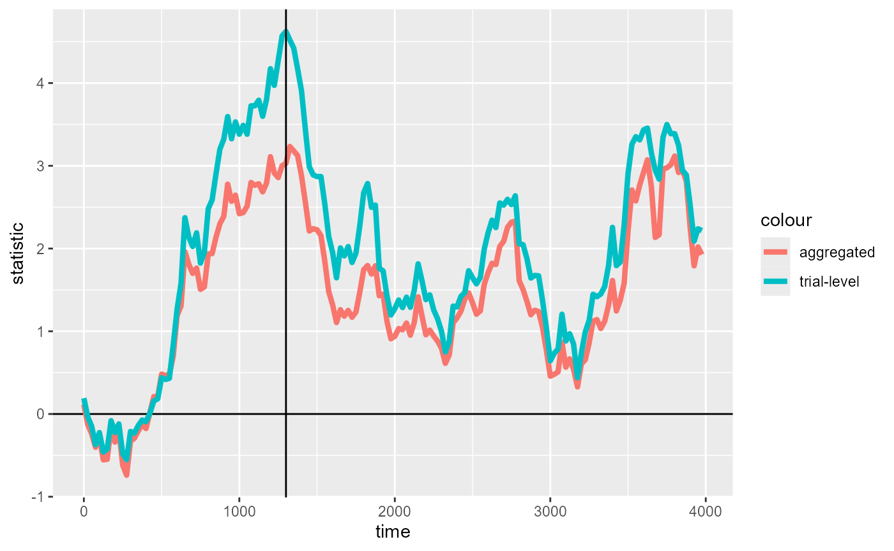

This tutorial is a walkthrough of basic package features for conducting CPA and the components of a CPA.
See more tutorials and vignettes on the Articles page.
Background
The data comes from an eye-tracking study by Garrison, Baudet, Breitfield, Aberman, & Bergelson (2020) “Familiarity plays a small role in noun comprehension at 12-18 months”, by way of the peekbankr corpus package.
The original study used a growth curve model to analyze children’s looks to an object when it was familiar (“own”) vs. unfamiliar (“other”) at different ages (median-split into “younger” and “older” groups). We will not be replicating that specific analysis here.
Instead, we will follow Katie
Von Holzen’s tutorial which used this dataset to conduct a simpler,
cluster-based permutation analysis (CPA) of differences between the two
age groups in the proportion of looks to the target. The tutorial used
the eyetrackingR package for
both data
preparation and CPA, but
this vignette will use dplyr and
jlmerclusterperm for those tasks, respectively.
The following set-up code reads in the data and prepares it for analysis:
Data preparation code
library(dplyr)
remotes::install_github("langcog/peekbankr", quiet = TRUE)
library(peekbankr)
# Load data
aoi_timepoints <- get_aoi_timepoints(dataset_name = "garrison_bergelson_2020")
administrations <- get_administrations(dataset_name = "garrison_bergelson_2020")
# Pre-processing
## Filter for age groups of interest
ps_data <- aoi_timepoints %>%
left_join(administrations, by = "administration_id") %>%
filter(!between(age, 14, 16)) %>%
mutate(age_binned = ifelse(age < 14, "Younger", "Older"))
## Filter for time window of interest
ts_window <- ps_data |>
filter(t_norm >= 0, t_norm < 4000)
## Identify trials to exclude (trackloss in >25% of samples)
to_exclude <- ts_window |>
group_by(subject_id, trial_id) |>
summarize(prop = mean(aoi == "missing"), .groups = "drop") |>
filter(prop > 0.25)
## Exclude disqualifying trials and keep information relevant for CPA
ts_data <- ts_window |>
anti_join(to_exclude, by = c("subject_id", "trial_id")) |>
mutate(
target = aoi == "target",
missing = aoi == "missing",
age = factor(age_binned, c("Younger", "Older"))
) |>
select(subject_id, age, trial_id, time = t_norm, target, missing)
# Data of subject mean proportions of fixations to target
ts_data_agg <- ts_data |>
group_by(subject_id, age, time) |>
summarize(prop = sum(target) / sum(!missing), .groups = "drop")
# Data of trial-level fixations to target (0s and 1s)
ts_data_trials <- ts_data %>%
filter(!missing) %>%
mutate(target = as.integer(target)) %>%
select(subject_id, age, trial_id, time, target)The data ts_data_agg that we’ll use to replicate the
tutorial has just 4 columns which are relevant for the
cluster-permutation analysis:
-
subject_id: Unique identifier for subjects -
age: A between-participant factor variable ("Younger","Older") -
time: A continuous measure of time from 0-3975ms at 25ms intervals -
prop: A by-subject proportion of looks to the target object
ts_data_agg
#> # A tibble: 2,560 × 4
#> subject_id age time prop
#> <int> <fct> <dbl> <dbl>
#> 1 1413 Older 0 0.7
#> 2 1413 Older 25 0.733
#> 3 1413 Older 50 0.7
#> 4 1413 Older 75 0.7
#> 5 1413 Older 100 0.677
#> 6 1413 Older 125 0.677
#> 7 1413 Older 150 0.645
#> 8 1413 Older 175 0.645
#> 9 1413 Older 200 0.581
#> 10 1413 Older 225 0.548
#> # ℹ 2,550 more rowsThe following replicates the figure from the tutorial before it introduces the cluster-permutation analysis:
library(ggplot2)
tutorial_fig <- ggplot(ts_data_agg, aes(x = time, y = prop, color = age)) +
stat_smooth(method = "loess", span = 0.1, se = TRUE, aes(fill = age), alpha = 0.3) +
theme_bw() +
labs(y = "Prop. of Target Looks") +
geom_hline(yintercept = .5, color = "black") +
geom_vline(xintercept = 0, color = "black") +
coord_cartesian(ylim = c(0, 1)) +
theme(
legend.position = "bottom",
legend.title = element_blank()
)
tutorial_fig
Outline
This case study vignette showcases four features of doing a CPA with
jlmerclusterperm:
Prepping data for CPA using
make_jlmer_spec()CPA in one go with
clusterpermute()A modular, step-by-step approach to CPA
Using logistic regression over trial-level data of 1s and 0s
Load the package and start the Julia instance with
jlmerclusterperm_setup() before proceeding.
library(jlmerclusterperm)
jlmerclusterperm_setup(verbose = FALSE)A) Prepping a specification object
Conducting a cluster-based permutation analysis in
jlmerclusterm starts with creating a special
specification object, which compiles information
necessary for a CPA.
The function make_jlmer_spec() returns the specification
object of class <jlmer_spec> and minimally requires
two arguments:
-
formula: An R regression model formula -
data: A data frame
For example, to model prop using age as a
predictor for the ts_data_agg data:
simple_spec <- make_jlmer_spec(formula = prop ~ 1 + age, data = ts_data_agg)
simple_spec
#> ── jlmer specification ───────────────────────────────────────── <jlmer_spec> ──
#> Formula: prop ~ 1 + ageOlder
#> Predictors:
#> age: ageOlder
#> Data:
#> # A tibble: 2,560 × 2
#> prop ageOlder
#> <dbl> <dbl>
#> 1 0.7 1
#> 2 0.733 1
#> 3 0.7 1
#> # ℹ 2,557 more rows
#> ────────────────────────────────────────────────────────────────────────────────The printed display includes four pieces of information about the specification object:
Formula: The model formula in Julia syntax. Here, it looks similar to the formula we provided, but with the contrasts “spelled out” (
agebecomesageOlder)Predictors: A list of predictors in the form of ( original : expanded ). In this case, there is one predictor
agewhich is expanded toageOlderbecause it’s treatment coded with “Younger” as the reference level.Groupings: These should be specified in the call to
make_jlmer_spec(). They are empty forsimple_specbecause we only provided theformulaanddata.Data: A transformed dataframe whose columns are terms in the expanded formula. Note that the default dummy coding has been applied for the discrete variable
age- it is nowageOlderwith 0 for “Younger” and 1 for “Older”.
We start with this bare specification object because, while it lacks
some parts for a CPA, we can use this for
jlmerclusterperm’s simple interface to Julia regression
models.
The function jlmer() takes this specification object as
input and returns a Julia regression model. This model represents a
“global” model fitted over the entire data, collapsing across time.
global_jmod <- jlmer(simple_spec)
tidy(global_jmod)
#> # A tibble: 2 × 5
#> term estimate std.error statistic p.value
#> <chr> <dbl> <dbl> <dbl> <dbl>
#> 1 (Intercept) 0.523 0.00387 135. 0
#> 2 ageOlder 0.0984 0.00548 18.0 3.45e-72This is equivalent to an lm() model with the same
specifications:
library(broom) # for the `tidy()` method for `lm()`
global_rmod <- lm(formula = prop ~ 1 + age, data = ts_data_agg)
tidy(global_rmod)
#> # A tibble: 2 × 5
#> term estimate std.error statistic p.value
#> <chr> <dbl> <dbl> <dbl> <dbl>
#> 1 (Intercept) 0.523 0.00387 135. 0
#> 2 ageOlder 0.0984 0.00548 18.0 4.45e-68We raise this tangent on jlmer() because we recommend
sanity-checking the design and output of a global model prior to using
the same model specifications for a CPA. Because regression models are
fit in Julia “under the hood”, you want to make sure that the output is
comparable to what you would expect in R. The global model can also tell
you the upper bound for model complexity. For example, if the global
model has singular fit, the time-wise models fitted to subsets of the
data likely will do too.
Functions for CPA also take a <jlmer_spec> object
but require information about time (to calculate time-wise statistics)
and subject/trial (for bootstrapped permutation). The
ts_data_agg data does not have trial-level information
because it has been summarized by subject, so we just leave that
out.
ts_data_agg_spec <- make_jlmer_spec(
formula = prop ~ 1 + age, data = ts_data_agg,
subject = "subject_id", time = "time",
trial = NULL # This is the default value
)
ts_data_agg_spec
#> ── jlmer specification ───────────────────────────────────────── <jlmer_spec> ──
#> Formula: prop ~ 1 + ageOlder
#> Predictors:
#> age: ageOlder
#> Groupings:
#> Subject: subject_id
#> Trial:
#> Time: time
#> Data:
#> # A tibble: 2,560 × 4
#> prop ageOlder subject_id time
#> <dbl> <dbl> <int> <dbl>
#> 1 0.7 1 1413 0
#> 2 0.733 1 1413 25
#> 3 0.7 1 1413 50
#> # ℹ 2,557 more rows
#> ────────────────────────────────────────────────────────────────────────────────The trial argument can be omitted from the
<jlmer_spec> object only if each time sample/bin is
uniquely identified by subject. Otherwise, trial should be
a column in the data that uniquely identifies each time values within
subject (for example, a column for items in a counterbalanced designed
where participant sees every item in only one of its variants).
B) CPA with clusterpermute()
The clusterpermute() function runs a CPA in one go,
using information from a <jlmer_spec> object. In
addition to the specification object, you must also supply the (t-value)
threshold and the number of simulations to run:
CPA_agg <- clusterpermute(
ts_data_agg_spec,
threshold = 2,
nsim = 100,
progress = FALSE # Suppress printing of progress for vignette
)
CPA_agg
#> $null_cluster_dists
#> ── Null cluster-mass distribution (t > 2) ────────────── <null_cluster_dists> ──
#> ageOlder (n = 100)
#> Mean (SD): -0.844 (29.71)
#> Coverage intervals: 95% [-46.664, 71.698]
#> ────────────────────────────────────────────────────────────────────────────────
#>
#> $empirical_clusters
#> ── Empirical clusters (t > 2) ────────────────────────── <empirical_clusters> ──
#> ageOlder
#> [850, 1525]: 74.724 (p=0.0396)
#> [2675, 2775]: 11.017 (p=0.4356)
#> [3500, 3900]: 46.295 (p=0.0990)
#> ────────────────────────────────────────────────────────────────────────────────The result is a list of two elements:
A
<null_cluster_dists>object which holds information about the distribution of the bootstrapped cluster-mass statistics from random permutations of the data:An
<empirical_clusters>object which holds per-predictor information about the clusters detected, and their p-values after significance testing against the null:
The output is explained more in the next section, but for presented purposes simply note that the results are very similar to that reported in Katie Von Holzen’s tutorial, copied below.
#> ## Summary of Clusters ======
#> ## Cluster Direction SumStatistic StartTime EndTime Probability
#> ## 1 1 Positive 74.723687 850 1550 0.051
#> ## 2 2 Positive 6.905622 2725 2800 0.405
#> ## 3 3 Positive 46.294644 3500 3925 0.111The minor numerical differences are due to the stochastic nature of the permutation test and because we’re comparing t-tests in R to regression models in Julia.
C) A step-by-step approach
The clusterpermute() function showcased above consists
of five parts, all of which are also standalone functions in the
package:
compute_timewise_statistics()extract_empirical_clusters()permute_timewise_statistics()extract_null_cluster_dists()calculate_clusters_pvalues()
These functions correspond to the algorithmic steps of the
statistical test. While clusterpermute() obviates the need
to think about these individual components, knowing them gives you a
greater flexibility over the procedure.
This section walks through the CPA step-by-step using these functions.
1) Empirical clusters
The compute_timewise_statistics() function takes a
<jlmer_spec> object and returns the timewise
statistics in the form of a matrix where each row is a
predictor and each column is a time point:
empirical_statistics <- compute_timewise_statistics(ts_data_agg_spec)
dim(empirical_statistics)
#> [1] 1 160
empirical_statistics[1, 1:5, drop = FALSE] # First 5 time points
#> Time
#> Predictor 0 25 50 75 100
#> ageOlder 0.1166025 -0.1273179 -0.2387778 -0.4022095 -0.2804397For example we see that at 25ms, the t-value for age is
-0.127. This is consistent with the figure from the tutorial replicated
above which show the two lines mostly overlapping.
Just for demonstration purposes, we use to_jlmer()
quickly fit a model using the same formula to just the data at 25ms. We
see that the t-value for age from this model is exactly the
same as what we saw above:
to_jlmer(prop ~ 1 + age, data = filter(ts_data_agg, time == 25)) %>%
tidy() %>%
filter(term == "ageOlder") %>%
pull(statistic)
#> [1] -0.1273179We then construct the empirical clusters from the
timewise statistics. Clusters are defined as a continuous span of
statistics of the same sign whose absolute value passes a certain
threshold. The extract_empirical_clusters() function takes
the timewise statistics and a threshold to do just that:
empirical_clusters <- extract_empirical_clusters(empirical_statistics, threshold = 2)
empirical_clusters
#> ── Empirical clusters (t > 2) ────────────────────────── <empirical_clusters> ──
#> ageOlder
#> [850, 1525]: 74.724
#> [2675, 2775]: 11.017
#> [3500, 3900]: 46.295
#> ────────────────────────────────────────────────────────────────────────────────With a t-value threshold of 2, we detect three clusters in the data
for the main effect of age (ageOlder). The numbers in
brackets show the span of the cluster and the number to the right show
the sum of the t-values in the cluster (a.k.a. the cluster-mass
statistic).
We can collect this <empirical_clusters> object as
a data frame with tidy():
empirical_clusters_df <- tidy(empirical_clusters)
empirical_clusters_df
#> # A tibble: 3 × 6
#> predictor id start end length sum_statistic
#> <chr> <fct> <dbl> <dbl> <dbl> <dbl>
#> 1 ageOlder 1 850 1525 28 74.7
#> 2 ageOlder 2 2675 2775 5 11.0
#> 3 ageOlder 3 3500 3900 17 46.3And add it to the figure above:
tutorial_fig +
geom_segment(
aes(x = start, xend = end, y = -Inf, yend = -Inf),
linewidth = 10, color = "steelblue",
inherit.aes = FALSE,
data = empirical_clusters_df
) +
geom_text(
aes(
y = -Inf, x = start + (end - start) / 2,
label = paste("Cluster", id)
),
vjust = -2,
inherit.aes = FALSE,
data = empirical_clusters_df
)
But by this point we do not know whether the size of the clusters that we observe are (un)likely to emerge by chance. To calculate this probability, we need to simulate the null distribution.
2) Null distribution
The permute_timewise_statistics() function takes a
specification object and the number of bootstrapped permutation of the
data to simulate (via the nsim argument).
The returned 3-dimensional array is like the output of
compute_timewise_statistics() except with an additional
dimension representing each simulation:
null_statistics <- permute_timewise_statistics(ts_data_agg_spec, nsim = 100)
# simulation by time by predictor
dim(null_statistics)
#> [1] 100 160 1
# First 5 time points of the first three simulations
null_statistics[1:3, 1:5, 1, drop = FALSE]
#> , , Predictor = ageOlder
#>
#> Time
#> Sim 0 25 50 75 100
#> 001 -0.1037696 0.1387838 0.4583545 0.4337538 0.69136613
#> 002 1.4358330 1.2745381 1.2985888 0.9111359 1.16401311
#> 003 0.2545470 0.3885999 0.3374939 0.3200497 0.05603617The permutation algorithm preserves the grouping structures of the
data as specified in the specification object. For example, when testing
a between-subject predictor like age, the age groups of
participants are random swapped while preserving the temporal structure
of the data.
The null distribution is a collection of the largest cluster-mass statistic from each simulated data. If no clusters are detected in a simulation, it contributes a cluster-mass of zero to the null.
We use extract_null_cluster_dists() to construct the
null distribution, using the same threshold value of 2 to allow for a
comparison with the empirical clusters:
null_cluster_dists <- extract_null_cluster_dists(null_statistics, threshold = 2)
null_cluster_dists
#> ── Null cluster-mass distribution (t > 2) ────────────── <null_cluster_dists> ──
#> ageOlder (n = 100)
#> Mean (SD): -6.150 (40.29)
#> Coverage intervals: 95% [-114.564, 74.425]
#> ────────────────────────────────────────────────────────────────────────────────When printed, the returned <null_cluster_dists>
object shows summary statistics. You can use tidy() to
collect the samples from the null into a data frame:
null_cluster_dists_df <- tidy(null_cluster_dists)
null_cluster_dists_df
#> # A tibble: 100 × 6
#> predictor start end length sum_statistic sim
#> <chr> <dbl> <dbl> <dbl> <dbl> <fct>
#> 1 ageOlder NA NA NA 0 001
#> 2 ageOlder NA NA NA 0 002
#> 3 ageOlder 2175 2225 3 -6.37 003
#> 4 ageOlder NA NA NA 0 004
#> 5 ageOlder 3425 3475 3 -6.67 005
#> 6 ageOlder NA NA NA 0 006
#> 7 ageOlder NA NA NA 0 007
#> 8 ageOlder NA NA NA 0 008
#> 9 ageOlder NA NA NA 0 009
#> 10 ageOlder 1525 2475 39 -114. 010
#> # ℹ 90 more rowsThe null distribution can be plotted like so:
plot(
density(null_cluster_dists_df$sum_statistic),
main = "Null distribution of cluster-mass statistics"
)
Now all that is left is to test the probability of observing
cluster-mass statistics as extreme as that of the detected clusters in
empirical_clusters, using null_cluster_dists
as reference.
3) Significance test
The calculate_clusters_pvalues() function computes the
p-value for each empirical cluster and returns an augmented
<empirical_clusters> object:
empirical_clusters_tested <- calculate_clusters_pvalues(empirical_clusters, null_cluster_dists)
empirical_clusters_tested
#> ── Empirical clusters (t > 2) ────────────────────────── <empirical_clusters> ──
#> ageOlder
#> [850, 1525]: 74.724 (p=0.1100)
#> [2675, 2775]: 11.017 (p=0.4000)
#> [3500, 3900]: 46.295 (p=0.1700)
#> ────────────────────────────────────────────────────────────────────────────────Again, the p-values are slightly different because the test is stochastic. A separate vignette covers issues of replicability, seed, and rng.
When collected with tidy(), the p-values are added as a
column:
tidy(empirical_clusters_tested)
#> # A tibble: 3 × 7
#> predictor id start end length sum_statistic pvalue
#> <chr> <fct> <dbl> <dbl> <dbl> <dbl> <dbl>
#> 1 ageOlder 1 850 1525 28 74.7 0.11
#> 2 ageOlder 2 2675 2775 5 11.0 0.4
#> 3 ageOlder 3 3500 3900 17 46.3 0.17Note that when reporting pvalues, it’s customary to add 1 to the
numerator and denominator. This is because the observed data, however
unlikely, is itself one particular arrangement (permutation) of the
data. This is controlled via the add1 argument - it is
false by default in calculate_clusters_pvalues() but true
in clusterpermute().
calculate_clusters_pvalues(empirical_clusters, null_cluster_dists, add1 = TRUE)
#> ── Empirical clusters (t > 2) ────────────────────────── <empirical_clusters> ──
#> ageOlder
#> [850, 1525]: 74.724 (p=0.1188)
#> [2675, 2775]: 11.017 (p=0.4059)
#> [3500, 3900]: 46.295 (p=0.1782)
#> ────────────────────────────────────────────────────────────────────────────────We have now come full circle: the pvalue-augmented
<empirical_clusters> object, along with the
<null_cluster_dists> object, are also what the
clusterpermute() function returned above.
D) As logistic regression
Aggregated vs. trial-level data
The data that we have been using so far is an aggregated data which collapsed across trials within each subject. In other words, there is exactly one measure of the proportion of looks to the target per time point within subject:
It is possible to also fit a logistic regression model over the trial-level measure of “hits” (1s and 0s) on the target area of interest. This un-aggregated, trial-level data comes from the data preparation code at the top of this vignette.
ts_data_trials
#> # A tibble: 62,466 × 5
#> subject_id age trial_id time target
#> <int> <fct> <int> <dbl> <int>
#> 1 1413 Older 2659 0 1
#> 2 1413 Older 2659 25 1
#> 3 1413 Older 2659 50 1
#> 4 1413 Older 2659 75 1
#> 5 1413 Older 2659 100 1
#> 6 1413 Older 2659 125 1
#> 7 1413 Older 2659 150 1
#> 8 1413 Older 2659 175 1
#> 9 1413 Older 2659 200 1
#> 10 1413 Older 2659 225 1
#> # ℹ 62,456 more rowsTo demonstrate the relationship between the two data sets:
identical(
ts_data_agg,
ts_data_trials %>%
group_by(subject_id, age, time) %>%
summarize(prop = mean(target), .groups = "drop")
)
#> [1] TRUEThe specification object for fitting logistic regression models to the trial-level data requires two changes from the original:
The formula must predict the binary
targetvariable, instead ofpropA
trialgrouping must be specified to uniquely identify each time point within each subject
The following is the appropriate <jlmer_spec>
object for a CPA using logistic regression:
ts_data_trial_spec <- make_jlmer_spec(
formula = target ~ 1 + age, data = ts_data_trials,
subject = "subject_id", trial = "trial_id", time = "time"
)
ts_data_trial_spec
#> ── jlmer specification ───────────────────────────────────────── <jlmer_spec> ──
#> Formula: target ~ 1 + ageOlder
#> Predictors:
#> age: ageOlder
#> Groupings:
#> Subject: subject_id
#> Trial: trial_id
#> Time: time
#> Data:
#> # A tibble: 62,466 × 5
#> target ageOlder subject_id trial_id time
#> <int> <dbl> <int> <int> <dbl>
#> 1 1 1 1413 2659 0
#> 2 1 1 1413 2659 25
#> 3 1 1 1413 2659 50
#> # ℹ 62,463 more rows
#> ────────────────────────────────────────────────────────────────────────────────Again, we sanity check with a global model using
family = "binomial":
global_jmod_binom <- jlmer(ts_data_trial_spec, family = "binomial")
tidy(global_jmod_binom)
#> # A tibble: 2 × 5
#> term estimate std.error statistic p.value
#> <chr> <dbl> <dbl> <dbl> <dbl>
#> 1 (Intercept) 0.113 0.0121 9.31 1.24e- 20
#> 2 ageOlder 0.392 0.0164 23.9 1.08e-126The estimates are similar to that of global_jmod in the
previous section, but in log-odds.
Repeating the CPA with logistic regression
We repeat the same procedure from above but use our new specification
object and set family = "binomial":
empirical_statistics_binom <- compute_timewise_statistics(ts_data_trial_spec, family = "binomial")
empirical_clusters_binom <- extract_empirical_clusters(empirical_statistics_binom, threshold = 2)
empirical_clusters_binom
#> ── Empirical clusters (t > 2) ────────────────────────── <empirical_clusters> ──
#> ageOlder
#> [650, 725]: 8.727
#> [800, 1575]: 112.199
#> [1775, 1875]: 12.764
#> [2600, 2825]: 23.733
#> [3475, 3975]: 62.714
#> ────────────────────────────────────────────────────────────────────────────────Instead of 3 clusters, we now detect 5. We can annotate the detected clusters on the time series data as we did above:
Plotting code
empirical_clusters_binom_df <- tidy(empirical_clusters_binom)
tutorial_fig +
geom_segment(
aes(x = start, xend = end, y = -Inf, yend = -Inf),
linewidth = 10, color = "steelblue",
inherit.aes = FALSE,
data = empirical_clusters_binom_df
) +
geom_text(
aes(
y = -Inf, x = start + (end - start) / 2,
label = paste("Cluster", id)
),
vjust = -2,
inherit.aes = FALSE,
data = empirical_clusters_binom_df
)
The differences we see between the aggregated vs. trial-level data here are completely expected and follow straightforwardly from the following two facts:
The cluster-mass statistic is derived from the size of t-values at each time point, not the effect size. By virtue of the unaggregated
ts_data_trialsdata having more number of observations, the t-values are overall inflated where there is a difference in means (we also see this in the output ofglobal_jmodvs.global_jmod_binomas well).Whereas the aggregated data reflects a complete pooling over trial-level variation, the binomial model over trial-level data performs no pooling and treats each trial as independent. Thus, if a certain item in the experiment show an outlier effect at one time point, for example, then that will strongly influence the mass of any cluster spanning over that given time point.
The first issue (inflated statistics) is trivial and just takes a matter of adjusting the threshold. In fact, this is good because by “stretching out” the t-statistics, we get a higher resolution for the shape of the timewise statistics. However. the second issue (no pooling) is troubling because it can warp the fundamental shape of the timewise statistics.
We diagnose these factors by visualizing the timewise statistics. We also plot timewise statistics from the aggregated data for comparison:
timewise_statistics_fig <- ggplot(mapping = aes(time, statistic)) +
geom_hline(aes(yintercept = 0)) +
geom_line(
aes(color = "aggregated"),
linewidth = 1.5,
data = tidy(empirical_statistics)
) +
geom_line(
aes(color = "trial-level"),
linewidth = 1.5,
data = tidy(empirical_statistics_binom)
)
timewise_statistics_fig +
geom_vline(
aes(xintercept = time),
data = tidy(empirical_statistics_binom) %>%
slice(which.max(abs(statistic)))
)
We see that the trial-level binomial model has overall inflated t-values, as well as more pronounced “peaks” (specifically the maximum at 1300ms). A middle-ground, partial pooling approaching using mixed-effects models for CPA is showcased in other case study vignettes.
For present purposes, we raise the threshold to a value (of
2.8) which gets us close to detecting at least the same
largest cluster from empirical_statistics,
spanning 850ms-1525ms:
empirical_clusters_binom2 <- extract_empirical_clusters(empirical_statistics_binom, threshold = 2.8)
empirical_clusters_binom2
#> ── Empirical clusters (t > 2.8) ──────────────────────── <empirical_clusters> ──
#> ageOlder
#> [850, 1525]: 102.450
#> [3500, 3875]: 51.365
#> ────────────────────────────────────────────────────────────────────────────────We run the cluster permutation test with this threshold for just the largest cluster:
CPA_trial <- clusterpermute(
ts_data_trial_spec,
family = "binomial",
threshold = 2.8,
nsim = 100,
top_n = 1, # Just test the largest cluster
progress = FALSE # Suppress printing of progress for vignette
)This gives us a pvalue for the cluster spanning from 850ms to 1525ms that is similar to the one reported for the aggregated data:
CPA_trial$empirical_clusters
#> ── Empirical clusters (t > 2.8) ──────────────────────── <empirical_clusters> ──
#> ageOlder
#> [850, 1525]: 102.450 (p=0.0297)
#> ────────────────────────────────────────────────────────────────────────────────
CPA_agg$empirical_clusters
#> ── Empirical clusters (t > 2) ────────────────────────── <empirical_clusters> ──
#> ageOlder
#> [850, 1525]: 74.724 (p=0.0396)
#> [2675, 2775]: 11.017 (p=0.4356)
#> [3500, 3900]: 46.295 (p=0.0990)
#> ────────────────────────────────────────────────────────────────────────────────These appear to converge at a higher nsim for this data
set. We also time the 1000-simulation runs to showcase the speed of
jlmerclusterperm.
system.time({
set_rng_state(123L)
CPA_agg_1000 <- clusterpermute(
ts_data_agg_spec,
threshold = 2,
nsim = 1000, top_n = 1, progress = FALSE
)
})
#> user system elapsed
#> 0.27 0.58 17.53
CPA_agg_1000
#> $null_cluster_dists
#> ── Null cluster-mass distribution (t > 2) ────────────── <null_cluster_dists> ──
#> ageOlder (n = 1000)
#> Mean (SD): 0.078 (40.29)
#> Coverage intervals: 95% [-76.748, 82.717]
#> ────────────────────────────────────────────────────────────────────────────────
#>
#> $empirical_clusters
#> ── Empirical clusters (t > 2) ────────────────────────── <empirical_clusters> ──
#> ageOlder
#> [850, 1525]: 74.724 (p=0.0629)
#> ────────────────────────────────────────────────────────────────────────────────
system.time({
set_rng_state(123L)
CPA_trial_1000 <- clusterpermute(
ts_data_trial_spec,
family = "binomial", threshold = 2.8,
nsim = 1000, top_n = 1, progress = FALSE
)
})
#> user system elapsed
#> 0.14 0.20 31.39
CPA_trial_1000
#> $null_cluster_dists
#> ── Null cluster-mass distribution (t > 2.8) ──────────── <null_cluster_dists> ──
#> ageOlder (n = 1000)
#> Mean (SD): -0.045 (55.09)
#> Coverage intervals: 95% [-119.239, 125.506]
#> ────────────────────────────────────────────────────────────────────────────────
#>
#> $empirical_clusters
#> ── Empirical clusters (t > 2.8) ──────────────────────── <empirical_clusters> ──
#> ageOlder
#> [850, 1525]: 102.450 (p=0.0689)
#> ────────────────────────────────────────────────────────────────────────────────Note the use set_rng_state(), which makes the two CPAs
generate the same permutations of the observed data.